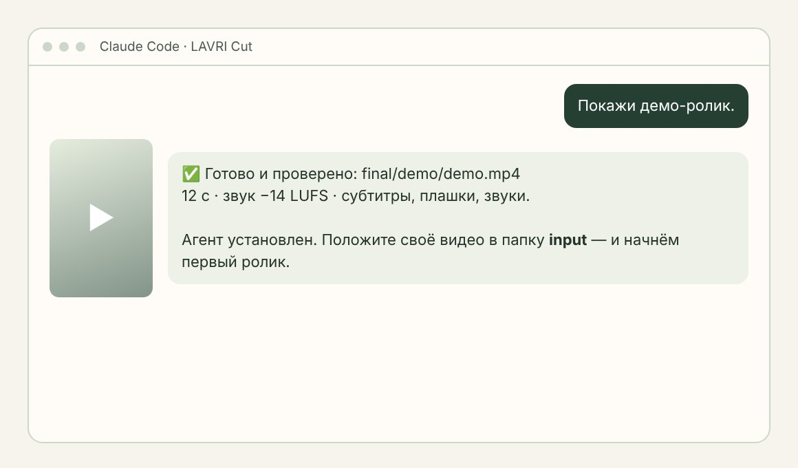
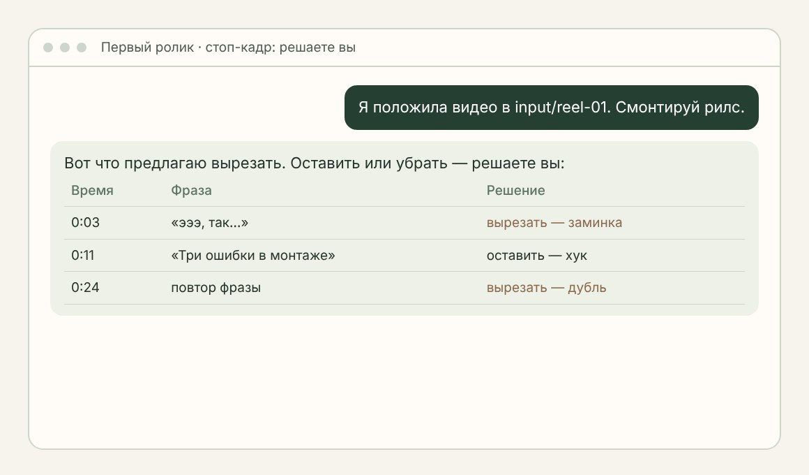
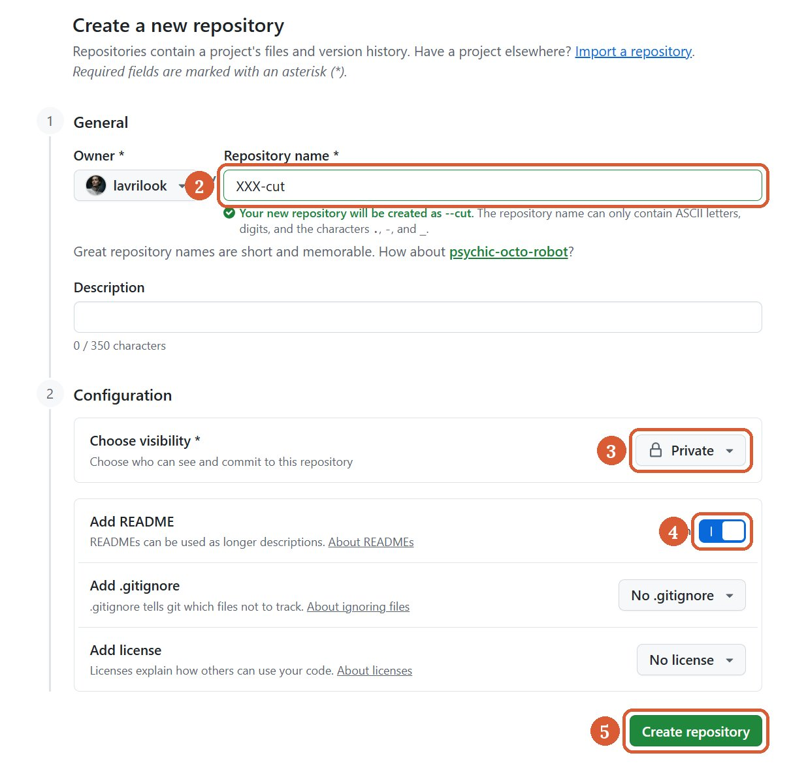
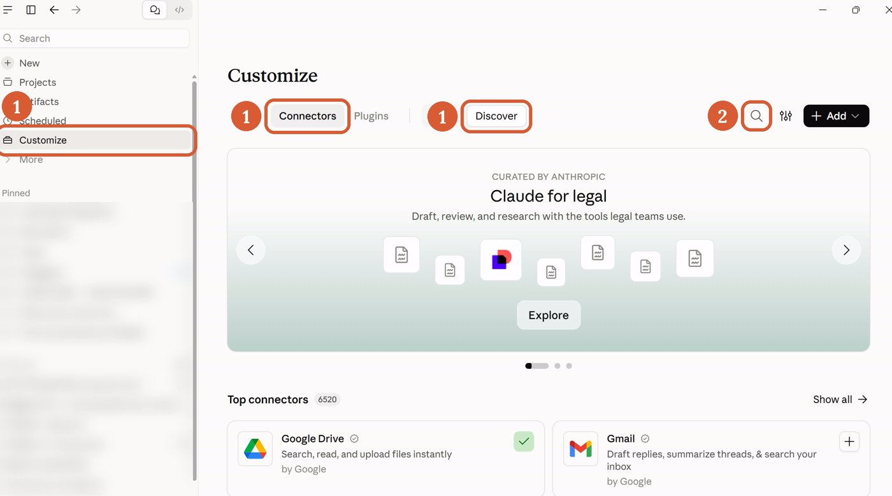
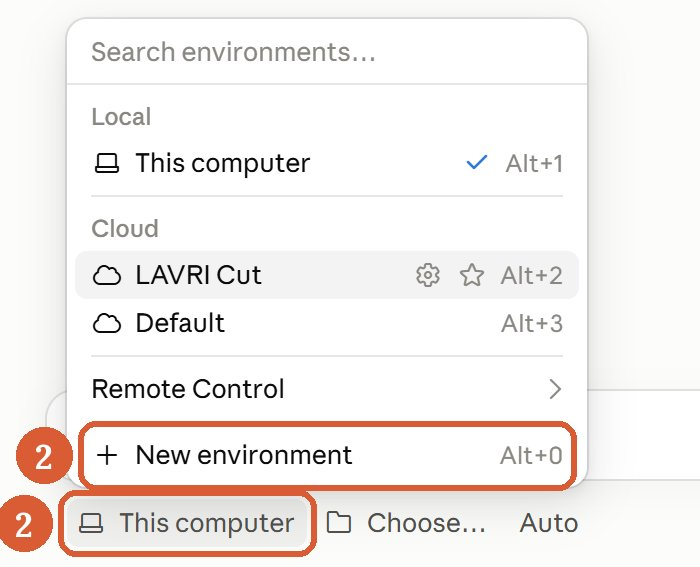
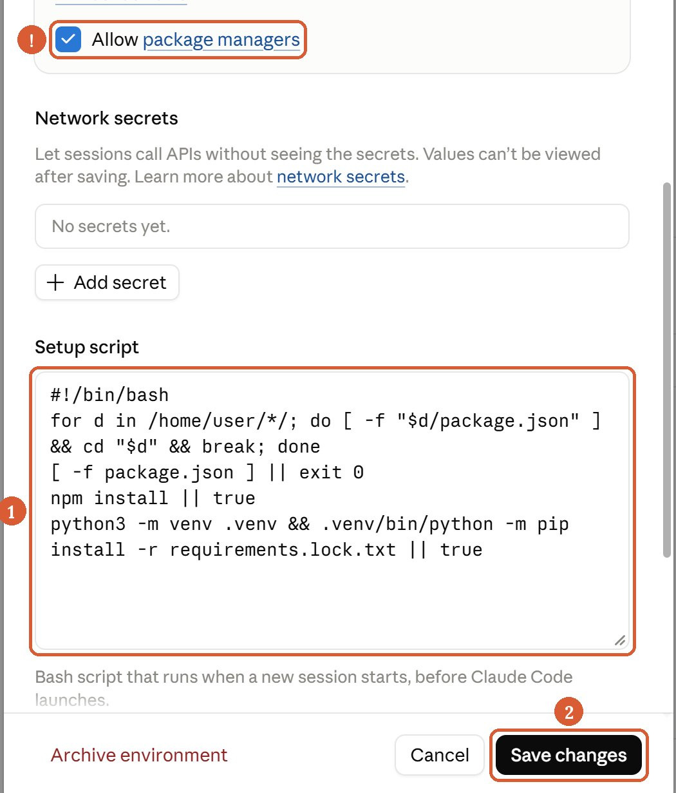
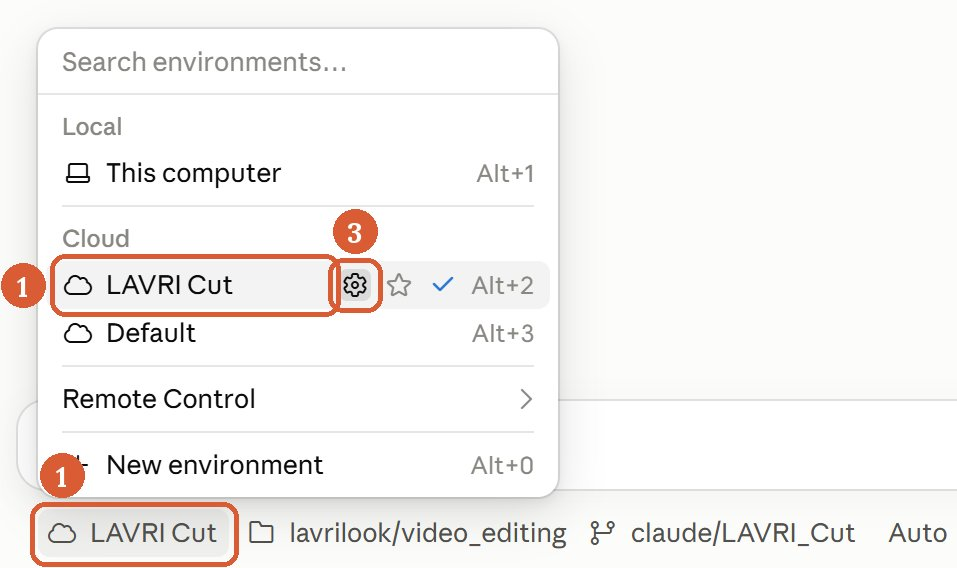
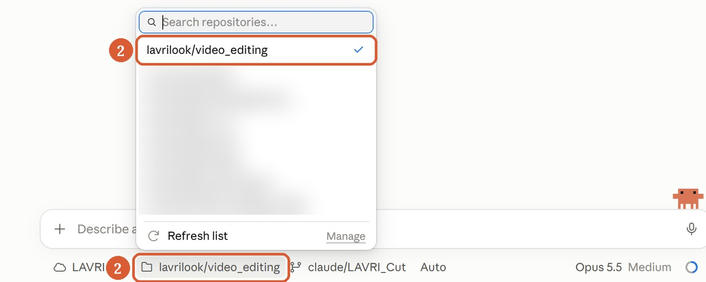

Монтажный агент LAVRI Cut
Подключить монтажного агента
Готовый агент-монтажёр для Reels в Claude: чистит шум и паузы, ставит субтитры, плашки, звуки и переходы, принимает правки словами или в редакторе. Выберите, где он будет работать.
Работать с компьютера
- Агент живёт в папке на вашем Mac или Windows
- Видео, звуки, шрифты, готовые ролики — в папке, никуда не пропадают
- Нет лимита на размер ролика
- Не нужны GitHub и настройки среды
Работать в облаке
- Монтаж с любого устройства, в том числе с телефона
- Редактор открывается и на телефоне
- Агент и его память — в вашем личном репозитории GitHub
- Настройка сложнее: GitHub, среда, домены, коннекторы
В чём разница
| Что | Компьютер | Облако |
|---|---|---|
| Где работает агент | Папка на вашем компьютере | Виртуальный компьютер Claude + ваш личный репозиторий GitHub |
| Код агента, правила, навыки | В папке | В репозитории GitHub |
| Звуки и шрифты | В папке — не пропадают, можно дополнять | В репозитории — не пропадают, можно дополнять |
| Память агента: уроки, образ, брифы | В папке | В репозитории |
| Ваши исходники, музыка, готовые ролики | Лежат в папке, никуда не деваются | Временно — в рабочей сессии; хранить на Google Диске, готовое — сразу скачать |
| С телефона | Нет | Да |
| Установка | Сами по инструкции, ~30 минут | По инструкции или на консультации |
Сомневаетесь — начните с компьютера: это проще всего. В облако агента можно перенести позже, ваши настройки сохранятся.
Инструкция 1 · Mac или Windows
Работать с компьютера
Четыре шага: папка, архив, Claude, один промт. Программы агент поставит сам.
Что понадобится
- Компьютер Mac или Windows, около 5 ГБ свободного места.
- Приложение Claude для компьютера — claude.com/download, тариф Pro или выше (в нём есть Claude Code).
- Архив LAVRI Cut, который прислал бот после оплаты.
Создайте папку и положите в неё архив
Создайте папку LAVRI Cut, например в «Документах». Положите в неё архив из бота. Распаковывать вручную не нужно — агент сделает это сам.

Откройте папку в Claude Code
- Откройте приложение Claude → Code.
- Выберите Local / «Этот компьютер» (не облако).
- Укажите папку LAVRI Cut.

Скопируйте и отправьте промт установки
Агент распакует архив, проверит компьютер и поставит недостающие программы. Если нужно ваше подтверждение (пароль от компьютера вводится в окне системы, не в чате) — он скажет одной фразой.
Ты — мой монтажный агент LAVRI Cut. Работай только в этой папке. 1. Если здесь лежит zip-архив LAVRI Cut и он ещё не распакован — распакуй его содержимое прямо в эту папку (без лишней вложенной папки). Прочитай CLAUDE.md и работай по нему. 2. Подготовь всё сам: определи систему (Mac или Windows), проверь Node.js 20+, FFmpeg и Python 3. Чего нет — установи по подсказкам npm run doctor. Системную установку делай только после моего «да»; пароль я ввожу в окне системы, не в чате. Не обновляй систему и не подключай платные сервисы. 3. Выполни npm install, затем npm run setup:python, затем npm run doctor. 4. Запусти npm run demo. Покажи результат приёмки и открой демо-ролик (или скажи, где он лежит). Ничего не удаляй и не перезаписывай в папках input/ и assets/. Отвечай по-русски, коротко и без технических подробностей. Если нужно моё действие — назови одно конкретное действие и жди.
Посмотрите демо-ролик
Когда агент напишет «✅ Готово и проверено», откройте демо-ролик со звуком. Всё установлено. Первый запуск дольше — агент скачивает модель распознавания речи.

Установка — один раз. Дальше просто открывайте папку LAVRI Cut в Claude Code.
Первый ролик
В папке input создайте папку ролика латиницей, например reel-01, и положите туда видео. Картинки и музыку — в assets/reel-01.
Я положила видео в input/reel-01. Смонтируй вертикальный рилс по правилам CLAUDE.md. Тема: … Для кого: … Призыв в конце: … Сначала покажи бриф. Дальше останавливайся там, где нужно моё решение.
Агент останавливается на важных шагах: бриф → шум «до / после» → таблица «оставить / вырезать» → превью → финал только после вашего «да».

Правки словами или в редакторе
Пишите обычными словами и называйте время в ролике. Каждая правка — новая версия, к старой можно вернуться.
На 0:06 субтитры крупнее и выше. С 0:12 до 0:15 вставь мою картинку assets/reel-01/foto.jpg. Плашку «МОНТАЖ» убери, вместо неё счётчик 2/5. Музыка перекрывает голос на 0:20 — сделай тише.
Или напишите «Открой редактор»: кадр ролика и все элементы — двигайте плашки мышкой, меняйте текст, размер, время и стиль субтитров, затем «Сохранить новой версией».

Ещё
- «Давай настроим мой образ» + 3–5 примеров — цвета, шрифты, субтитры под вас.
- «Распакуй меня» — 2 промта для обычного чата Claude (~40 минут): агент пишет хуки и подписи словами вашей аудитории.
- Звуки (48), шрифты, обложки и карусели — уже внутри.
Если не получилось
| Нет вкладки Code | Нужен тариф Pro или выше и свежая версия приложения Claude. |
| Агент не может читать файлы или запускать команды | Выбран не тот режим: Code → Local / «Этот компьютер» → папка LAVRI Cut, новый чат. |
| «FFmpeg / Python не найден» | Напишите «Установи сам». Mac — через Homebrew, Windows — через winget. Пароль — в окне системы. |
| Не скачивается модель распознавания | Проверьте интернет и напишите: «Выполни npm run setup:python ещё раз». |
| Закончились лимиты Claude | Работа не теряется: продолжите позже в той же папке. |
| Агент сделал не то | «Стоп. Верни, как было» — старые версии он не затирает. |
Не получилось за 2–3 попытки — пишите @lavri_ai со скриншотом. Настройка вместе — платная консультация.
Инструкция 2 · компьютер + телефон
Работать в облаке
Агент живёт в вашем личном репозитории GitHub и работает в облаке Claude — монтаж с телефона и с компьютера. Настройка сложнее: если не получится, настроим вместе на платной консультации.
Подготовка
- Приложение Claude на компьютере и телефоне — claude.com/download.
- Подписка Claude Pro или выше (в ней есть Claude Code).
- Аккаунт GitHub — github.com/signup.
- Google Диск на телефоне — загружать видео для монтажа.
- Аккаунт Higgsfield — по желанию, для генераций.
- Архив LAVRI Cut из бота.
Репозиторий
- Откройте github.com/new.
- Repository name:
XXX-cut— вместо XXX ваше сокращение латиницей, напримерanna-cut. - Visibility: Private. Add README: включите.
- Нажмите Create repository.

GitHub → Claude
- В claude.ai слева Customize → Connectors → Discover.
- Лупа → GitHub → GitHub Integration → Connect.
- В окне GitHub: Install → свой аккаунт → Only select repositories → ваш
XXX-cut→ Install. - Готово, когда видно Connected.


Облачная среда
- В приложении Claude → Code → + New.
- Под полем ввода нажмите на среду → + New environment. Создаём свою среду — не This computer и не Default.


- Name: LAVRI Cut. Network access: Limited.
- Поставьте галочку Allow package managers — без неё среда не заработает (ошибка 403).
- Allowed domains — список ниже.

Allowed domains
Вставьте список целиком. Если среда уже есть — удалите старый список полностью и вставьте этот. Звёздочку *. не убирайте — без неё не скачиваются ролики из Instagram, YouTube и TikTok.
huggingface.co *.huggingface.co *.hf.co drive.google.com drive.usercontent.google.com cloud-api.yandex.net downloader.disk.yandex.ru *.disk.yandex.net d8j0ntlcm91z4.cloudfront.net upload.higgsfield.ai pixabay.com cdn.pixabay.com mixkit.co assets.mixkit.co freesound.org cdn.freesound.org fonts.google.com fonts.googleapis.com fonts.gstatic.com fontspace.com *.fontspace.com i.pinimg.com instagram.com *.instagram.com *.cdninstagram.com *.fbcdn.net youtube.com *.youtube.com *.googlevideo.com *.ytimg.com tiktok.com *.tiktok.com *.tiktokcdn.com *.tiktokv.com
Зачем: распознавание речи (huggingface), Google и Яндекс Диск, Higgsfield — скачать генерации (cloudfront) и загрузить свои кадры (upload), стоки, музыка и звуки, шрифты, Pinterest, ролики конкурентов.

Скрипт установки
Прокрутите до Setup script и вставьте:
#!/bin/bash for d in /home/user/*/; do [ -f "$d/package.json" ] && cd "$d" && break done [ -f package.json ] || exit 0 npm install || true python3 -m venv .venv && \ .venv/bin/python -m pip install \ -r requirements.lock.txt || true
Нажмите Save changes. Проверьте ещё раз галочку Allow package managers.

Коннекторы
claude.ai → Customize → Connectors. Подключите до первого сообщения агенту — иначе нужна новая сессия.
- Google Drive — рекомендую: видео с телефона загружайте на Диск, агент заберёт даже большие.
- Higgsfield — по желанию. Нужен полный коннектор: + Add → Add custom connector → Name: Higgsfield, URL ниже → Add → Connect → войдите в свой аккаунт. Карточка «Higgsfield AI» (про Claude Motion) не подходит — в ней нет генерации.
https://mcp.higgsfield.ai/mcp
API-ключ не нужен. Генерации тратят кредиты Higgsfield — агент всегда называет цену и ждёт вашего «да».
Среда, папка и архив
- Откройте новую сессию. Под полем ввода: среда → LAVRI Cut, папка → ваш
XXX-cut.


- Прикрепите архив из бота к сообщению и отправьте:
Распакуй архив в корень репозитория (содержимое папки внутри архива — она называется как мой репозиторий), сделай commit и push в main.
Установка и демо
Поставь зависимости: npm install и npm run setup:python. Затем запусти npm run doctor и npm run demo. Покажи результат приёмки.
Ждите «Готово и проверено». Это один раз — дальше всё ставится само в каждой новой сессии.
Ваш образ
Приложите примеры: скриншоты шрифтов и цветов, Reels, которые нравятся по монтажу, музыку, подборки Pinterest.
Прочитай CLAUDE.md. Давай настроим мой образ: вот мои примеры (Reels, шрифты, музыка, Pinterest) — или предложи 3 варианта.
Проверка коннекторов
Создайте на Google Диске папку «Монтаж» и загрузите короткий ролик.
Посмотри, какой последний ролик лежит в папке «Монтаж» на моём Google Диске, и скачай его.
Загрузи инструменты Higgsfield, проверь баланс и покажи мою последнюю генерацию — например, фото.
Агент назвал ролик, скачал его и показал генерацию — всё работает.
Pixabay: фото, видео и музыка
- pixabay.com → Join → вход через Google.
- pixabay.com/api/docs → Parameters → строка key → скопируйте ключ.
- Шестерёнка у среды LAVRI Cut → Environment variables →
PIXABAY_API_KEY=ваш_ключ→ Save changes.

В новой сессии: «Найди вертикальное видео "кофе утро" на Pixabay» — агент пришлёт список с номерами.

Если не получилось
| Ошибка 403 | Нет галочки Allow package managers → шаг 3. |
| Не скачиваются ролики Instagram / YouTube / TikTok | В доменах нет звёздочек → замените список целиком. |
| Агент не видит Google Диск или Higgsfield | Подключите коннектор и откройте новую сессию → шаг 4. |
| Higgsfield: баланс виден, генерации нет | Подключён урезанный «Higgsfield AI» → свой коннектор https://mcp.higgsfield.ai/mcp. |
| Не загружается свой кадр в Higgsfield | Нет upload.higgsfield.ai в доменах → новая сессия. |
| Агент не видит репозиторий | В GitHub Integration выберите XXX-cut → шаг 2. |
| Нет «Готово и проверено» | Повторите шаг 6, пришлите скриншот ответа. |
Облако — временное рабочее место. Свои исходники держите на Google Диске, готовый ролик скачивайте сразу: агент присылает его файлом в чат.
Не получилось или хотите под ключ — платная консультация: настроим вместе. Пишите @lavri_ai.